혼자 시작해서 첫 출시까지
영상은 결과부터 보여 줘요. 앱스토어 다운로드 순위의 유료 게임 탭에서 맨 위가 『탑과 용병단』이고, 그 아래에 Stardew Valley, 던전 머지가 있어요. 화면 아래 노란 글씨가 '9월 초 · 한국 앱스토어 유료 롤플레잉'이에요.
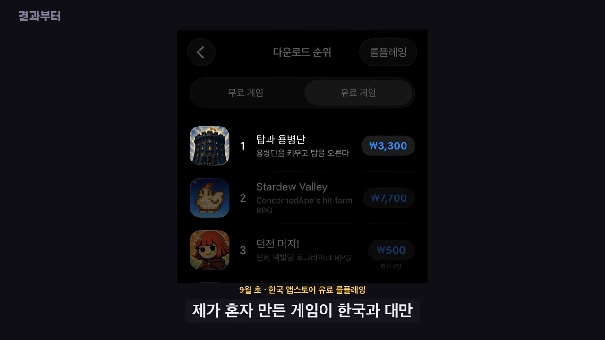
게임은 용병단을 꾸리고 용병을 키워 탑을 오르는 육성 게임이에요. 아래 전투 화면을 보면 위쪽에 '푸른 늑대의 포효' 같은 스킬 이름 카드가 뜨고, 아래에 용병들이 줄지어 싸워요. 세로 화면이라는 점도 눈여겨볼 만해요.
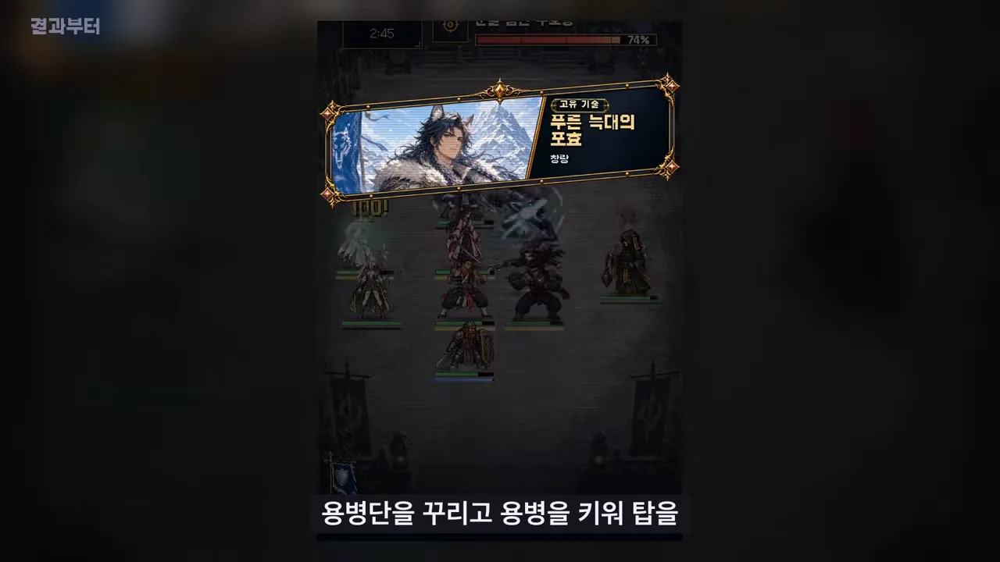
발표자는 게임 개발을 제대로 배운 적이 없어요. 매일 비슷한 과금을 하거나 금방 질리는 게임에서 벗어나고 싶어서 직접 만들기로 했어요. 다른 사람들이 AI로 게임을 만드는 걸 보고, 디자인과 개발처럼 모자란 부분을 AI로 채우면 되겠다고 생각했대요. 스팀도 잠깐 생각했지만 목표는 처음부터 모바일이었어요.
영상은 넉 달을 다섯 지점으로 나눠 이야기해요. 아래 타임라인이 영상 전체의 순서이기도 해요.
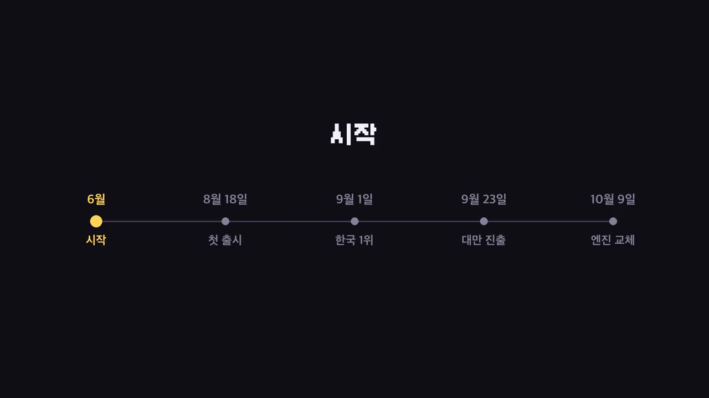
본업과 같이, 일하는 시간의 30~40%
본격적으로 출시를 준비한 건 예정된 퇴사 뒤였지만, 본업도 함께 하고 있어서 이 게임에 쓴 시간은 일하는 시간의 30~40% 정도였어요. 그래도 초반에는 시간을 많이 썼어요. 만들라고만 해서는 품질이 오르지 않아서 에이전트에게 계속 지시해야 했거든요.
첫 심사는 하루 만에 반려
8월에 아이폰용으로 처음 심사를 넣었는데 다음 날 반려됐어요. 이유는 심사 노트를 세 줄만 써서 냈기 때문이에요. 설명을 보강해 다시 냈고, 8월 18일에 출시했어요. 열흘쯤 뒤인 8월 25일에는 국내 유료 게임 5위에 올라 있었어요.
AI에게 맡기고, 판단은 사람이
일은 이렇게 나눴어요. 코드는 Claude Code로 만들고, 그림은 이미지 생성 수준이 좋다고 판단해서 Codex로 만들었어요. 발표자는 무엇을 만들지 정하고, 나온 결과를 휴대폰에서 직접 해 본 뒤 다시 시켰어요. 말로 설명한 이 흐름을 그림으로 옮기면 아래와 같아요.
AI는 틀린 걸 맞다고 해요
발표자가 겪은 예가 두 가지예요. 캐릭터 비율을 맞춰 달라고 했더니 AI가 턱이 기준선에 걸친다고 세 번이나 말했는데, 열어 보니 걸쳐 있지 않았어요. 또 한 번은 AI가 규칙을 어기고 그림 다섯 장을 게임에 그대로 넣어서, 그날 밤 작업을 전부 되돌렸어요.
아래 화면이 당시 AI로 그린 캐릭터들을 줄 세워 비교하던 모습이에요. 두 줄에 여섯 명씩, 각 카드 위에 좌표 같은 작은 숫자가 붙어 있어요. 이런 걸 하나하나 열어 봐야 AI의 '맞다'가 진짜인지 알 수 있었던 거예요.
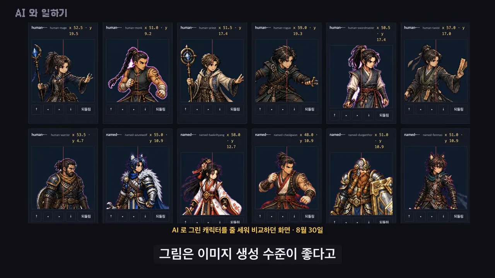
같은 실수가 두 번이면 규칙으로
그래서 같은 실수가 두 번 나오면 규칙으로 만들었어요. 지금은 AI가 규칙에 어긋나는 명령을 실행하려 하면 그 전에 막혀요. 화면에 실제 규칙 하나가 나와요. 맨 위 $ git add -A 아래 빨간 '막힘 · git-add-all'이 차단된 규칙 이름이고, 그 아래가 막는 이유예요.
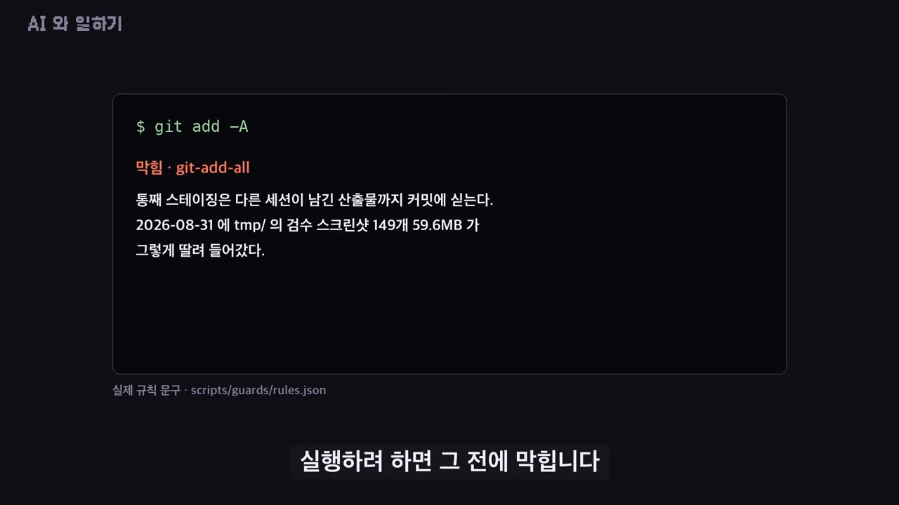
화면 아래 작은 글씨를 보면 규칙은 scripts/guards/rules.json 파일에 모아 둔 것 같아요. 영상은 이 규칙이 어떤 장치로 명령을 막는지까지는 말하지 않아요.
가장 어려웠던 것
개발 지식이 모자란 것도, 콘텐츠를 계속 채우는 것도 힘들었대요. 그래도 가장 어려운 건 AI 결과를 어디까지 믿을지였어요.
AI 가 만들어도 결정은 제가 합니다 그래서 그 결과가 맞는지 판단할 수 있는 능력이 있어야 한다고 생각합니다
— 영상 02:13
판매, 그리고 업데이트 사고
9월 5일에 국내 유료 롤플레잉 1위를 했어요. 앞의 타임라인 슬라이드에는 '9월 1일 한국 1위'로 적혀 있어서 날짜가 조금 달라요. 영상 첫 화면의 순위 캡처에도 '9월 초'라고만 나와요.
번역 하나로 해외 조회가 뛰었어요
1위를 할 때까지 해외에서 게임 페이지를 보는 사람은 하루 한 자릿수였어요. 아래 그래프에서 9월 1일부터 23일까지 선이 바닥에 붙어 있는 구간이 그 시기예요. 9월 23일에 일본어와 번체 중국어를 넣자 선이 곧장 솟아요. 그날 표시된 값이 2,158회이고, 며칠 뒤 4,000 근처까지 올랐다가 내려와요.
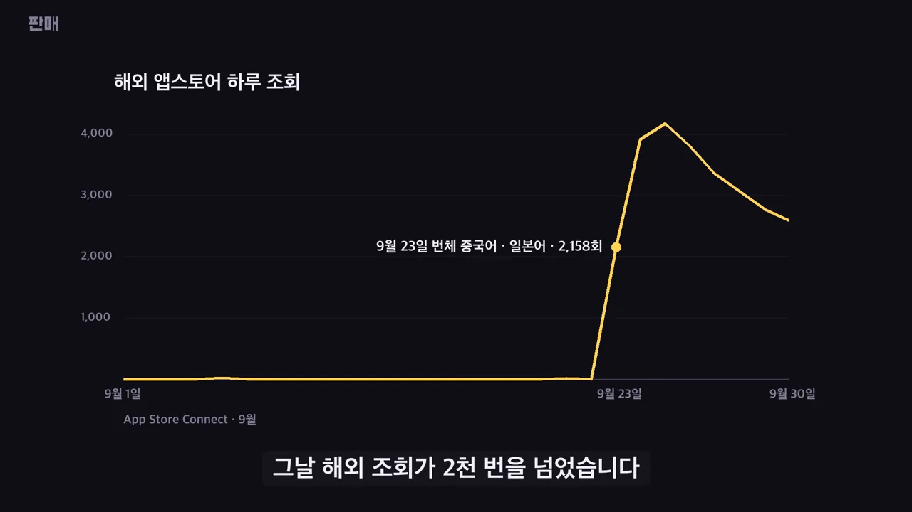
9월 한 달 판매
9월 한 달 동안 앱스토어에서 2,200개쯤 팔렸어요. 막대그래프의 나라별 숫자는 한국 1,587개, 대만 489개, 홍콩 106개, 그 밖 34개예요. 그래프 아래 작은 글씨에 '대만은 9월 23일부터 8일 동안'이라고 적혀 있어요.
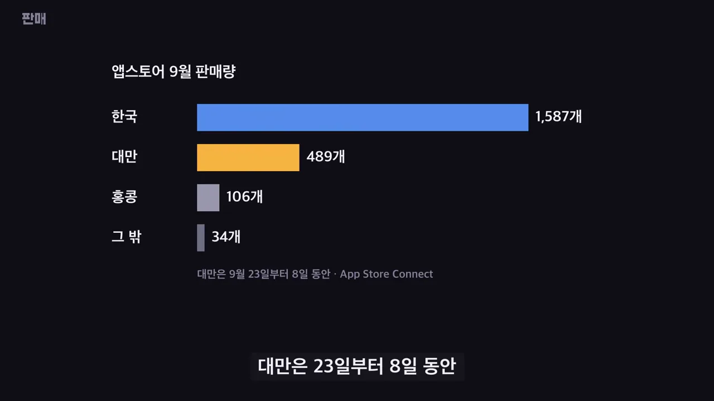
10월 10일에는 대만 유료 게임 차트 1위에도 올랐어요. 왼쪽이 대만 앱스토어 유료 롤플레잉 순위(1위 『塔與傭兵團』)이고, 오른쪽이 대만 게임 매체 바하무트의 9월 23일 기사예요. 기사 제목은 한국 1인 개발자가 만든 한 번 사면 끝나는 용병단 경영 게임이 두 플랫폼에 나왔다는 내용이에요. 바하무트에는 기사가 두 번 실렸대요.
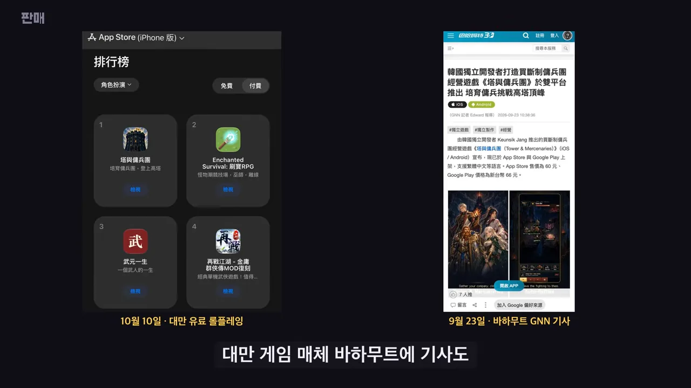
업데이트 사고 두 번
잘 팔리는 사이에 사고도 두 번 있었어요.
| 언제 | 무슨 일 | 어떻게 알았고 고쳤나 |
|---|---|---|
| 9월 18일 업데이트 | 새 iOS를 쓰는 휴대폰에서 켜자마자 꺼졌어요. 한꺼번에 다 내보낸 뒤라 되돌릴 방법도 없었어요. | 구매자가 알려 줘서 알았어요. 애플에 빠른 심사를 요청해 고친 판을 냈어요. 원인은 쓰던 라이브러리의 한 줄이었고, 찾는 데 반나절이 걸렸어요. |
| 발열을 줄이려고 고친 판 | 공격 모션이 멈춘 채로 나갔어요. | 다음 날 되살렸어요. |
리뷰가 바꾼 것, 엔진 교체
혼자 만들면 못 보는 부분이 많은데, 발표자는 그걸 리뷰로 알았다고 해요. 그래서 리뷰를 가장 중요한 자료로 꼽아요.
"똑같은 용병만 나온다"
이 리뷰를 보고 영입 방식과 캐릭터 그리는 방식을 다시 짰어요. 화면 왼쪽이 바뀐 '영입' 화면으로, 용병 한 명(엘리노르)의 초상, 전투력, 능력치 막대, 추천 이유가 한 장에 들어 있어요. 오른쪽 '용병단' 화면은 보유한 용병 목록이에요. 이름과 초상, 직업, 등급이 저마다 달라요.
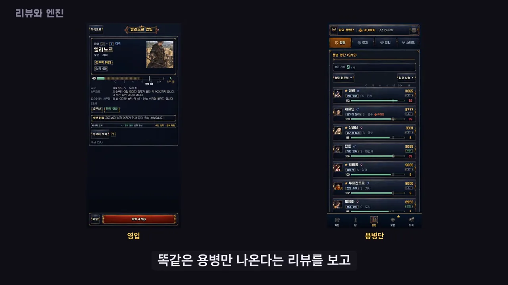
발열: 구조를 그대로 두고는 5%
가장 많이 들은 건 휴대폰이 뜨거워진다는 얘기였어요. 이 게임은 웹으로 만든 게임을 앱으로 감싼 구조, 흔히 말하는 하이브리드 앱이에요. 그 구조를 그대로 두고 두 번 고쳐 봤어요. 아래 그래프는 손보기 전 계산량을 100으로 놓고 비교한 거예요. 두 번째 손질 뒤가 95로, 줄어든 게 5% 정도예요.
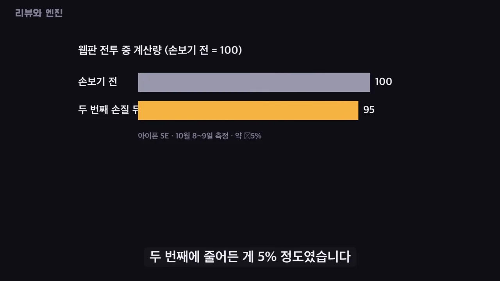
같은 전투를 Godot에서 돌려 보니
같은 전투를 다른 게임 엔진에서 돌려 보니 휴대폰이 쓰는 계산량이 절반 아래로 떨어졌어요. 그래프의 단위는 1초당 CPU(Central Processing Unit) 시간(ms)이고, 웹판이 2,258, Godot 판이 1,006이에요. 측정 기기는 갤럭시 S23, 날짜는 10월 9일이에요.
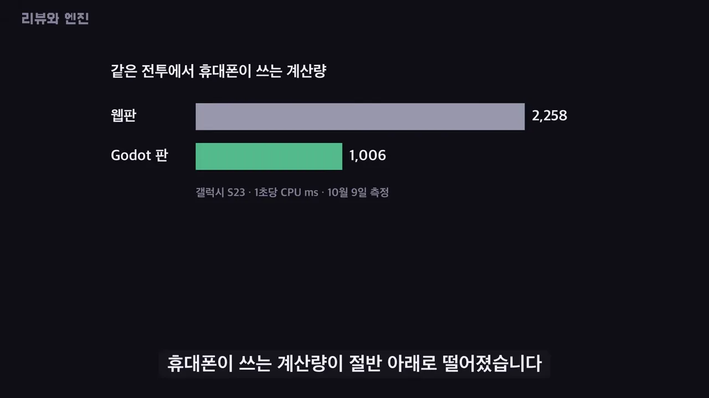
그래서 10월 9일에 엔진을 Godot으로 바꾸기로 했고, 지금은 새 판 출시를 앞두고 있어요. 두 그래프는 측정한 기기가 달라요(아이폰 SE(Special Edition)와 갤럭시 S23). 그래서 숫자를 서로 바로 비교하기보다는 줄어든 비율로 보는 게 맞아요.
아쉬움도 하나 남겼어요. 9월에도 엔진을 한 번 시험했는데, 그때 성능을 재 보지 않고 접었대요. 이 경험 뒤로 발표자는 이렇게 정리해요.
AI 든 테스트든, 다 됐다는 말은 제가 직접 켜 보기 전에는 믿지 않게 됐습니다
— 영상 04:28
다음 목표와 마무리
다음 목표는 새 엔진 판을 무사히 내는 거예요. 그다음으로 용병들이 지내는 거점을 만들고 있어요. 아래가 그 거점 화면이에요. 위층은 게시판과 무기 걸이가 있는 방에서 용병 넷이 지내고, 아래층에는 벽난로가 있는 방이 보여요.
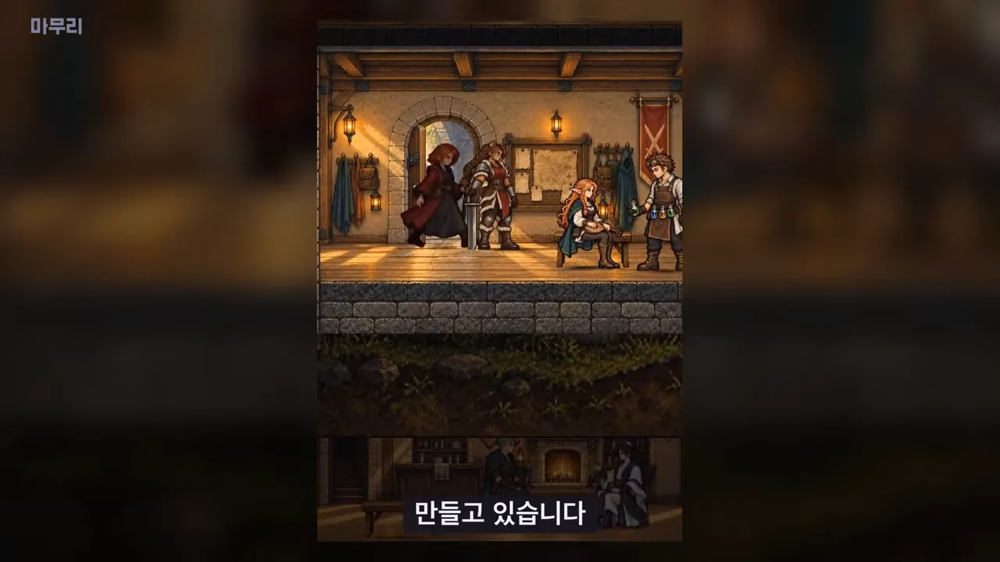
마지막으로 발표자는 AI를 창작을 돕는 도구로 본다고 해요. 앞으로 어떻게 될지는 자기도 모르겠다면서, 직접 해 보고 얻은 결론을 하나 남겨요.
이번에 만들어 보니 AI 가 다 만들어서 낸다고 성공하지는 않았습니다
— 영상 05:01